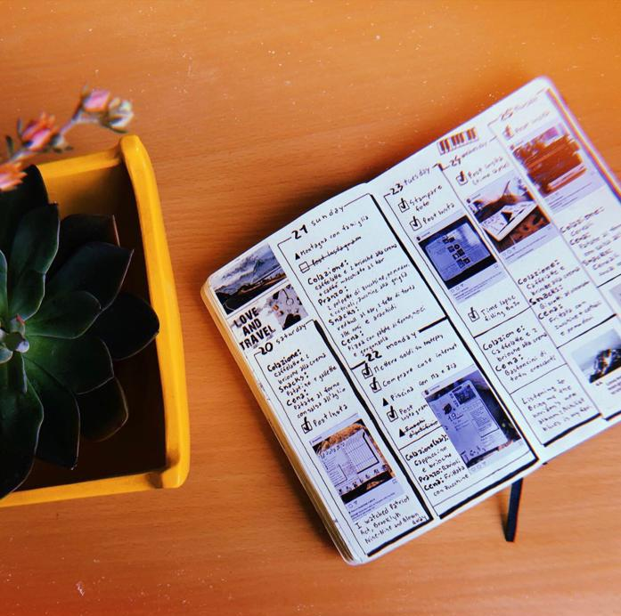

Studymojji was born in 2018 by Gabriela Baciu, a student at the University of Bologna.
It was created after studygram and goes as far back as Instagram does.
Studygram is a hashtag used by people to share study notes. If you think about it,
sharing study notes goes waaaay back. From asking your classmates for their notes
when you missed school to actually writing them for you own benefit.
They're colorful, easy to read and help you get the right information in.
Why do people use studygram?
To stay motivated
To stay accountable
To share notes with others
To share study tips
It creates a community
On the profile you'll find:
Bullet Journal Inspiration
Reading Inspiration

Studying Inspiration
